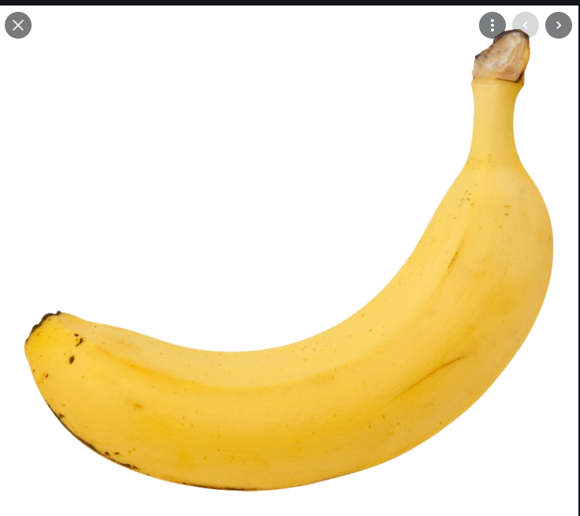

Functions¶
Where we keep the useful functions¶
- modules.functions.add_ten(param)¶
Function adds ten to the given input parameters:
- Parameters
param (float) – The input number to add 10 to.
- Returns
The output number
- Return type
float
Notes
This function does this mathematically:.
\[\begin{split}\alpha =& \beta +1, \quad \text{where} \\ \beta =& \text{input parameter} \\ \alpha =& \text{output} \\\end{split}\]Here is a picture of a banana for your amusement:
Note
Bananas are very tasty.
Warning
Do not try to eat more than 3 bananas per day!